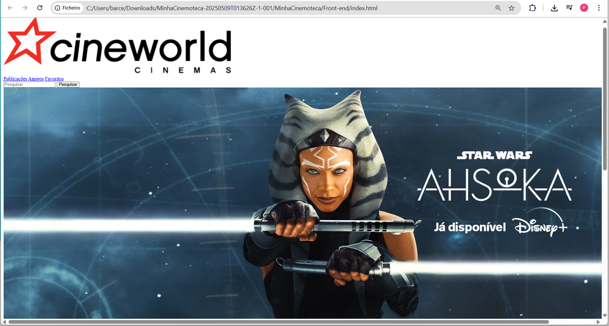

Rede Social Minha Cinemoteca

Sobre o Projeto
O projeto Minha Cinemoteca foi desenvolvido para a disciplina de Banco de Dados Não Relacional, em dupla, com o objetivo de construir uma rede social temática sobre cinema, onde os usuários podem cadastrar, consultar e compartilhar filmes e séries favoritos.
Objetivos
- Implementar uma aplicação web para cadastro e exibição de filmes e séries.
- Aplicar conceitos de bancos de dados NoSQL, utilizando MongoDB e AWS DynamoDB.
- Praticar integração de sistemas front-end e back-end.
Tecnologias e Bancos Utilizados
- Back-end: PHP
- Banco de Dados:
- MongoDB: banco de dados NoSQL orientado a documentos, conhecido pela flexibilidade no armazenamento de dados em formato JSON e escalabilidade horizontal.
- AWS DynamoDB: banco NoSQL totalmente gerenciado pela Amazon Web Services, com alta disponibilidade e desempenho em escala global.
- Front-end: HTML5, CSS3 e JavaScript
Participação
- Desenvolvimento das funcionalidades de back-end em PHP.
- Implementação e manipulação do banco de dados MongoDB.
- Criação e gerenciamento da conta na AWS para uso do DynamoDB.
- Auxílio na configuração e integração do banco DynamoDB com a aplicação.
- Integração entre o front-end e back-end, garantindo comunicação eficiente entre as camadas da aplicação.
← Voltar para o Portfólio